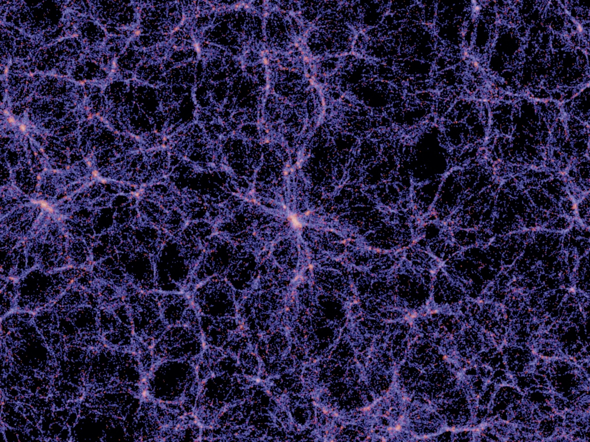

Sono un laureato magistrale in Astrofisica e Cosmologia presso l'Università di Bologna, principalmente interessato ai metodi per l'analisi dei dati e alla statistica. Competente in analisi bayesiana dei dati e programmazione in Python. Sono un buon parlante dell'inglese con buone capacità di comunicazione. Sono appassionato di diffusione della scienza e attività intellettualmente stimolanti che promuovono l'apprendimento e lo scambio di idee.

La distribuzione tridimensionale delle galassie codifica la fisica dell'Universo dalle sue prime momenti a oggi. Possiamo studiare la struttura su larga scala dell'universo utilizzando statistiche di riepilogo chiamate funzioni di correlazione N-puntuali. La statistica più semplice è la funzione di correlazione a due punti, ma l'aggiunta di statistiche di ordine superiore all'analisi permette di estrarre più informazioni dai dati. Partendo dalla funzione di correlazione a tre punti, possiamo accedere alle informazioni non gaussiane codificate nella distribuzione delle galassie.
Qui ci sono alcune delle mie pubblicazioni recenti: